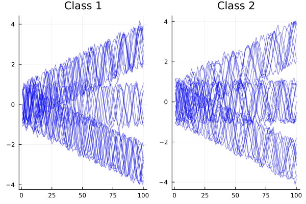

Classification
This tutorial for MPSTime will take you through the basic steps needed to fit an MPS to a time-series dataset.
Demo dataset
First, import or generate your data. Here, we generate a two class "noisy trendy sine" dataset for the sake of demonstration, but if you have a dataset in mind, you can skip to the next section. Our demonstration dataset consists of a sine function with a randomised phase, plus a linear trend, plus some normally distributed noise. Each $T$-length time series in class $c$ at time $t$ is given by:
\[x^c_t = \sin{\left(\frac{2\pi}{\tau}t + \psi\right)} + \frac{mt}{T} + \sigma_c n_t\,,\]
where $\tau$ is the period, $m$ is the slope of a linear trend, $\psi \in [0, 2\pi)$ is a uniformly random phase offset, $\sigma_c$ is the noise scale, and $n_t \sim \mathcal{N}(0,1)$ are normally distributed random variables.
For the demonstration dataset, the two classes will be generated with different distributions of periods. The class one time series $x^1$ have $\tau \in[12, 15]$, and the class two time series $x^2$ will have$\tau \in[16, 19]$. We'll use $\sigma_c = 0.2$, and the slope $m$ will be randomly selected from $\{-3,0,3\}$.
We'll set up this dataset using the trendy_sine function from MPSTime.
using MPSTime, Random
rng = Xoshiro(1); # fix rng seed
ntimepoints = 100; # specify number of samples per instance
ntrain_instances = 300; # specify num training instances
ntest_instances = 200; # specify num test instances
X_train = vcat(
trendy_sine(ntimepoints, ntrain_instances ÷ 2; sigma=0.1, slope=[-3,0,3], period=(12,15), rng=rng)[1],
trendy_sine(ntimepoints, ntrain_instances ÷ 2; sigma=0.1, slope=[-3,0,3], period=(16,19), rng=rng)[1]
);
y_train = vcat(
fill(1, ntrain_instances ÷ 2),
fill(2, ntrain_instances ÷ 2)
);
X_test = vcat(
trendy_sine(ntimepoints, ntest_instances ÷ 2; sigma=0.2, slope=[-3,0,3], period=(12,15), rng=rng)[1],
trendy_sine(ntimepoints, ntest_instances ÷ 2; sigma=0.2, slope=[-3,0,3], period=(16,19), rng=rng)[1]
);
y_test = vcat(
fill(1, ntest_instances ÷ 2),
fill(2, ntest_instances ÷ 2)
);using Plots
p1 = plot(X_train[1:30,:]'; colour="blue", alpha=0.5, legend=:none, title="Class 1");
p2 = plot(X_train[end-30:end,:]'; colour="blue", alpha=0.5, legend=:none, title="Class 2");
plot(p1,p2)GKS: cannot open display - headless operation mode active
Training an MPS
Depending on the dataset, the results of fitMPS can be noticeably affected by what machine it is running on. If you're trying to replicate these tutorials, expect a classification uncertainty of 1-2% (the noisy trendy sine can be something of an extreme case). You can resolve this by either using higher precision computing (pass dtype=BigFloat or Complex{BigFloat} to MPSOptions), or use the evaluate function to resample your data and average the result. This is generally not significant for scientific computing applications as for real word datasets, the floating point error of up to a few percent is much less than the resampling error caused by choosing different train/test splits.
To train an MPS on your dataset, first, set up the hyperparameters (see Hyperparameters):
julia> opts = MPSOptions(); # calling this with no arguments gives default hyperparametersjulia> print_opts(opts; long=false); # pretty print the options table┌─────────┬──────────────────┬─────────┬─────────┬───────────────────┬───────────┬───────┐ │ nsweeps │ encoding │ eta │ chi_max │ sigmoid_transform │ loss_grad │ d │ │ Int64 │ Symbol │ Float64 │ Int64 │ Bool │ Symbol │ Int64 │ ├─────────┼──────────────────┼─────────┼─────────┼───────────────────┼───────────┼───────┤ │ 10 │ Legendre_No_Norm │ 0.01 │ 25 │ true │ KLD │ 5 │ └─────────┴──────────────────┴─────────┴─────────┴───────────────────┴───────────┴───────┘
and then pass the data and hyperparameters to the fitMPS function:
julia> mps, info, test_states = fitMPS(X_train, y_train, X_test, y_test, opts);output collapsed
julia> mps, info, test_states = fitMPS(X_train, y_train, X_test, y_test, opts);Generating initial weight MPS with bond dimension χ_init = 4 using random state 1234. The test set couldn't be perfectly rescaled by the training set normalization, 2 additional rescaling operations had to be performed! Initialising train states. Initialising test states. Using 1 iterations per update. Training KL Div. 115.83859037734713 | Training acc. 0.5433333333333333. Test KL Div. 114.9569611924355 | Testing acc. 0.52. Test conf: [38 62; 34 66]. Using optimiser CustomGD with the "TSGO" algorithm Starting backward sweeep: [1/10] Backward sweep finished. Starting forward sweep: [1/10] Finished sweep 1. Time for sweep: 22.0s Training KL Div. -32.2972055851588 | Training acc. 0.8566666666666667. Test KL Div. -25.665024406900578 | Testing acc. 0.71. Test conf: [69 31; 27 73]. Using optimiser CustomGD with the "TSGO" algorithm Starting backward sweeep: [2/10] Backward sweep finished. Starting forward sweep: [2/10] Finished sweep 2. Time for sweep: 4.69s Training KL Div. -36.94842047195944 | Training acc. 0.8466666666666667. Test KL Div. -30.837176149367387 | Testing acc. 0.74. Test conf: [75 25; 27 73]. Using optimiser CustomGD with the "TSGO" algorithm Starting backward sweeep: [3/10] Backward sweep finished. Starting forward sweep: [3/10] Finished sweep 3. Time for sweep: 4.07s Training KL Div. -38.412530478067474 | Training acc. 0.8966666666666666. Test KL Div. -32.44056421039497 | Testing acc. 0.8. Test conf: [77 23; 17 83]. Using optimiser CustomGD with the "TSGO" algorithm Starting backward sweeep: [4/10] Backward sweep finished. Starting forward sweep: [4/10] Finished sweep 4. Time for sweep: 4.75s Training KL Div. -40.1375971296207 | Training acc. 0.97. Test KL Div. -34.15883937879675 | Testing acc. 0.85. Test conf: [81 19; 11 89]. Using optimiser CustomGD with the "TSGO" algorithm Starting backward sweeep: [5/10] Backward sweep finished. Starting forward sweep: [5/10] Finished sweep 5. Time for sweep: 4.03s Training KL Div. -41.992515926282 | Training acc. 0.9866666666666667. Test KL Div. -36.02053883050395 | Testing acc. 0.93. Test conf: [92 8; 6 94]. Using optimiser CustomGD with the "TSGO" algorithm Starting backward sweeep: [6/10] Backward sweep finished. Starting forward sweep: [6/10] Finished sweep 6. Time for sweep: 4.92s Training KL Div. -43.15730357183779 | Training acc. 0.9966666666666667. Test KL Div. -37.122287770243496 | Testing acc. 0.935. Test conf: [93 7; 6 94]. Using optimiser CustomGD with the "TSGO" algorithm Starting backward sweeep: [7/10] Backward sweep finished. Starting forward sweep: [7/10] Finished sweep 7. Time for sweep: 4.23s Training KL Div. -44.03586281380655 | Training acc. 0.9966666666666667. Test KL Div. -38.01536217563261 | Testing acc. 0.945. Test conf: [94 6; 5 95]. Using optimiser CustomGD with the "TSGO" algorithm Starting backward sweeep: [8/10] Backward sweep finished. Starting forward sweep: [8/10] Finished sweep 8. Time for sweep: 4.8s Training KL Div. -44.7376304096775 | Training acc. 0.9966666666666667. Test KL Div. -38.76277089269799 | Testing acc. 0.95. Test conf: [93 7; 3 97]. Using optimiser CustomGD with the "TSGO" algorithm Starting backward sweeep: [9/10] Backward sweep finished. Starting forward sweep: [9/10] Finished sweep 9. Time for sweep: 4.15s Training KL Div. -45.3176870677532 | Training acc. 0.9966666666666667. Test KL Div. -39.34052417200651 | Testing acc. 0.95. Test conf: [93 7; 3 97]. Using optimiser CustomGD with the "TSGO" algorithm Starting backward sweeep: [10/10] Backward sweep finished. Starting forward sweep: [10/10] Finished sweep 10. Time for sweep: 4.94s Training KL Div. -45.80868418941644 | Training acc. 0.9966666666666667. Test KL Div. -39.79946176878575 | Testing acc. 0.95. Test conf: [93 7; 3 97]. MPS normalised! Training KL Div. -45.80868418941644 | Training acc. 0.9966666666666667. Test KL Div. -39.79946176878575 | Testing acc. 0.95. Test conf: [93 7; 3 97].
fitMPS doesn't use X_test or y_test for anything except printing performance evaluations, so it is safe to leave them blank. For unsupervised learning, input a dataset with only one class, or only pass X_train ( y_train has a default value of zeros(Int, size(X_train, 1)) ).
The mps::TrainedMPS can be passed directly to classify for classification, or init_imputation_problem to set up an imputation problem. info provides a short training summary, which can be pretty-printed with the sweep_summary function.
You can use also test_states to print a summary of the MPS performance on the test set.
get_training_summary(mps, test_states; print_stats=true);Dict{Symbol, Any} with 8 entries:
:confmat => [93 7; 3 97]
:test_balanced_acc => 0.95
:recall => 0.95
:test_acc => 0.95
:precision => 0.950721
:specificity => 0.95
:f1_score => 0.94998
:train_acc => 0.996667Hyperparameters
There are number of hyperparameters and data preprocessing opttrendy_sine ions that can be specified using MPSOptions(; key=value)
MPSTime.MPSOptions — TypeMPSOptions(; <Keyword Arguments>)Set the hyperparameters and other options for fitMPS.
Fields:
Logging
verbosity::Int=1: How much debug/progress info to print to the terminal while optimising the MPS. Higher numbers mean more outputlog_level::Int=3: How much statistical output. 0 for nothing, >0 to print losses, accuracies, and confusion matrix at each step. Noticeable computational overheadtrack_cost::Bool=false: Whether to print the cost at each Bond tensor site to the terminal while training, mostly useful for debugging new cost functions or optimisers (HUGE computational overhead)
MPS Training Hyperparameters
nsweeps::Int=5: Number of MPS optimisation sweeps to perform (One sweep is both forwards and Backwards)chi_max::Int=25: Maximum bond dimension allowed within the MPS during the SVD stepeta::Float64=0.01: The learning rate. For gradient descent methods, this is the step size. For Optim and OptimKit this serves as the initial step size guess input into the linesearchd::Int=5: The dimension of the feature map or "Encoding". This is the true maximum dimension of the feature vectors. For a splitting encoding, d = numsplits * auxbasis_dimcutoff::Float64=1E-10: Size based cutoff for the number of singular values in the SVD (See Itensors SVD documentation)dtype::DataType=Float64 or ComplexF64 depending on encoding: The datatype of the elements of the MPS. Supports the arbitrary precsion types such as BigFloat and Complex{BigFloat}exit_early::Bool=false: Stops training if training accuracy is 1 at the end of any sweep.
Encoding Options
encoding::Symbol=:Legendre: The encoding to use, including :Stoudenmire, :Fourier, :Legendre, :SLTD, :Custom, etc. see Encoding docs for a complete list. Can be just a time (in)dependent orthonormal basis, or a time (in)dependent basis mapped onto a number of "splits" which distribute tighter basis functions where the sites of a timeseries are more likely to be measured.projected_basis::Bool=false: Whether to project a basis onto the training data at each time. Normally, when specifying a basis of dimension d, the first d lowest order terms are used. When project=true, the training data is used to construct a pdf of the possible timeseries amplitudes at each time point. The first d largest terms of this pdf expanded in a series are used to select the basis terms.aux_basis_dim::Int=2: Unused for standard encodings. If the encoding is a SplitBasis, serves as the auxilliary dimension of a basis mapped onto the split encoding, so that the number of histogram bins = d / auxbasisdim.encode_classes_separately::Bool=false: Only relevant for data driven bases. If true, then data is split up by class before being encoded. Functionally, this causes the encoding method to vary depending on the class
Data Preprocessing and MPS initialisation
sigmoid_transform::Bool: Whether to apply a sigmoid transform to the data before minmaxing. This has the form
\[\boldsymbol{X'} = \left(1 + \exp{-\frac{\boldsymbol{X}-m_{\boldsymbol{X}}}{r_{\boldsymbol{X}} / 1.35}}\right)^{-1}\]
where $\boldsymbol{X}$ is the un-normalized time-series data matrix, $m_{\boldsymbol{X}}$ is the median of $\boldsymbol{X}$ and $r_{\boldsymbol{X}}$is its interquartile range.
minmax::Bool: Whether to apply a minmax norm to[0,1]before encoding. This has the form
\[\boldsymbol{X'} = \frac{\boldsymbol{X} - x'_{\text{min}}}{x'_{\text{max}} - x'_{\text{min}}},\]
where $\boldsymbol{X''}$ is the scaled robust-sigmoid transformed data matrix, $x'_\text{min}$ and $x'_\text{max}$ are the minimum and maximum of $\boldsymbol{X'}$.
data_bounds::Tuple{Float64, Float64} = (0.,1.): The region to bound the data to if minmax=true. This is separate from the encoding domain. All encodings expect data to be scaled scaled between 0 and 1. Setting the data bounds a bit away from [0,1] can help when your basis has poor support near its boundaries.init_rng::Int: Random seed used to generate the initial MPSchi_init::Int: Initial bond dimension of the random MPS
Loss Functions and Optimisation Methods
loss_grad::Symbol=:KLD: The type of cost function to use for training the MPS, typically Mean Squared Error (:MSE) or KL Divergence (:KLD), but can also be a weighted sum of the two (:Mixed) if uselegacyITensor is enabled.bbopt::Symbol=:TSGO: Which local Optimiser to use, builtin options are symbol gradient descent (:GD), or gradient descent with a TSGO rule (:TSGO). Ifuse_legacy_ITensor` is enabled, can be a Conjugate Gradient descent optimisation rule using either the Optim or OptimKit package (:Optim or :OptimKit respectively). The CGD methods work well for MSE based loss functions, but seem to perform poorly for KLD base loss functions.rescale::Tuple{Bool,Bool}=(false,true): Has the formrescale = (before::Bool, after::Bool). Where to enforce the normalisation of the MPS during training, either calling normalise!(Bond Tensor) before or after BT is updated. Note that for an MPS that starts in canonical form, rescale = (true,true) will train identically to rescale = (false, true) but may be less performant.update_iters::Int=1: Maximum number of optimiser iterations to perform for each bond tensor optimisation. E.G. The number of steps of (Conjugate) Gradient Descent used by TSGO, Optim or OptimKittrain_classes_separately::Bool=false: Whether the the trainer optimises the total MPS loss over all classes or whether it considers each class as a separate problem. Should make very little diffenceuse_legacy_ITensor::Bool=false: Whether to use the old, slow (but possibly easier to understand) ITensor Implementationsvd_alg::String="divide_and_conquer": SVD Algorithm to pass to ITensor
`
Debug
return_encoding_meta_info::Bool=false: Debug flag: Whether to return the normalised data as well as the histogram bins for the splitbasis types
MPSOptions(params::NamedTuple) -> MPSOptionsConvert the named tuple params with format (:option1=value1, :option2=value2,...) to an MPSOptions object.
Classification
To predict the class of unseen data, use the classify function.
MPSTime.classify — Methodclassify(mps::TrainedMPS, X_test::AbstractMatrix)) -> (predictions::Vector)Use the mps to predict the class of the rows of X_test by computing the maximum overlap.
Example
julia> W, info, test_states = fitMPS( X_train, y_train);
julia> preds = classify(W, X_test); # make some predictions
julia> mean(preds .== y_test)
0.9504373177842566For example, for the noisy trendy sine from earlier:
julia> predictions = classify(mps, X_test);julia> using StatsBasejulia> mean(predictions .== y_test)0.95
Training with a custom basis
To train with a custom basis, first, declare a custom basis with function_basis, and pass it in as the last argument to fitMPS. For this to work, the encoding hyperparameter must be set to :Custom in MPSOptions
using LegendrePolynomials
function legendre_encode(x::Float64, d::Int)
# default legendre encoding: choose the first n-1 legendre polynomials
leg_basis = [Pl(x, i; norm = Val(:normalized)) for i in 0:(d-1)]
return leg_basis
end
custom_basis = function_basis(legendre_encode, false, (-1., 1.))Basis(Custom)julia> mps, info, test_states = fitMPS(X_train, y_train, X_test, y_test, MPSOptions(; encoding=:Custom), custom_basis);output collapsed
julia> mps, info, test_states = fitMPS(X_train, y_train, X_test, y_test, MPSOptions(; encoding=:Custom), custom_basis);Generating initial weight MPS with bond dimension χ_init = 4 using random state 1234. The test set couldn't be perfectly rescaled by the training set normalization, 2 additional rescaling operations had to be performed! Initialising train states. Initialising test states. Using 1 iterations per update. Training KL Div. 115.83859037734713 | Training acc. 0.5433333333333333. Test KL Div. 114.9569611924355 | Testing acc. 0.52. Test conf: [38 62; 34 66]. Using optimiser CustomGD with the "TSGO" algorithm Starting backward sweeep: [1/10] Backward sweep finished. Starting forward sweep: [1/10] Finished sweep 1. Time for sweep: 3.45s Training KL Div. -32.2972055851588 | Training acc. 0.8566666666666667. Test KL Div. -25.665024406900578 | Testing acc. 0.71. Test conf: [69 31; 27 73]. Using optimiser CustomGD with the "TSGO" algorithm Starting backward sweeep: [2/10] Backward sweep finished. Starting forward sweep: [2/10] Finished sweep 2. Time for sweep: 3.99s Training KL Div. -36.94842047195944 | Training acc. 0.8466666666666667. Test KL Div. -30.837176149367387 | Testing acc. 0.74. Test conf: [75 25; 27 73]. Using optimiser CustomGD with the "TSGO" algorithm Starting backward sweeep: [3/10] Backward sweep finished. Starting forward sweep: [3/10] Finished sweep 3. Time for sweep: 4.16s Training KL Div. -38.412530478067474 | Training acc. 0.8966666666666666. Test KL Div. -32.44056421039497 | Testing acc. 0.8. Test conf: [77 23; 17 83]. Using optimiser CustomGD with the "TSGO" algorithm Starting backward sweeep: [4/10] Backward sweep finished. Starting forward sweep: [4/10] Finished sweep 4. Time for sweep: 4.01s Training KL Div. -40.1375971296207 | Training acc. 0.97. Test KL Div. -34.15883937879675 | Testing acc. 0.85. Test conf: [81 19; 11 89]. Using optimiser CustomGD with the "TSGO" algorithm Starting backward sweeep: [5/10] Backward sweep finished. Starting forward sweep: [5/10] Finished sweep 5. Time for sweep: 4.07s Training KL Div. -41.992515926282 | Training acc. 0.9866666666666667. Test KL Div. -36.02053883050395 | Testing acc. 0.93. Test conf: [92 8; 6 94]. Using optimiser CustomGD with the "TSGO" algorithm Starting backward sweeep: [6/10] Backward sweep finished. Starting forward sweep: [6/10] Finished sweep 6. Time for sweep: 4.81s Training KL Div. -43.15730357183779 | Training acc. 0.9966666666666667. Test KL Div. -37.122287770243496 | Testing acc. 0.935. Test conf: [93 7; 6 94]. Using optimiser CustomGD with the "TSGO" algorithm Starting backward sweeep: [7/10] Backward sweep finished. Starting forward sweep: [7/10] Finished sweep 7. Time for sweep: 4.15s Training KL Div. -44.03586281380655 | Training acc. 0.9966666666666667. Test KL Div. -38.01536217563261 | Testing acc. 0.945. Test conf: [94 6; 5 95]. Using optimiser CustomGD with the "TSGO" algorithm Starting backward sweeep: [8/10] Backward sweep finished. Starting forward sweep: [8/10] Finished sweep 8. Time for sweep: 4.74s Training KL Div. -44.7376304096775 | Training acc. 0.9966666666666667. Test KL Div. -38.76277089269799 | Testing acc. 0.95. Test conf: [93 7; 3 97]. Using optimiser CustomGD with the "TSGO" algorithm Starting backward sweeep: [9/10] Backward sweep finished. Starting forward sweep: [9/10] Finished sweep 9. Time for sweep: 4.08s Training KL Div. -45.3176870677532 | Training acc. 0.9966666666666667. Test KL Div. -39.34052417200651 | Testing acc. 0.95. Test conf: [93 7; 3 97]. Using optimiser CustomGD with the "TSGO" algorithm Starting backward sweeep: [10/10] Backward sweep finished. Starting forward sweep: [10/10] Finished sweep 10. Time for sweep: 4.78s Training KL Div. -45.80868418941644 | Training acc. 0.9966666666666667. Test KL Div. -39.79946176878575 | Testing acc. 0.95. Test conf: [93 7; 3 97]. MPS normalised! Training KL Div. -45.80868418941644 | Training acc. 0.9966666666666667. Test KL Div. -39.79946176878575 | Testing acc. 0.95. Test conf: [93 7; 3 97].
Docstrings
MPSTime.trendy_sine — Functiontrendy_sine(T::Int, n::Int; period=nothing, slope=nothing, phase=nothing, sigma=0.0,
rng=Random.GLOBAL_RNG, return_metadata=true) -> Tuple{Matrix{Float64}, Dict{Symbol, Any}}Generate n time series of length T, each composed of a sine wave with an optional linear trend and Gaussian noise defined by the equation:
\[x_t = \sin\left(\frac{2\pi}{\tau}t + \psi\right) + \frac{m t}{T} + \sigma n_t\]
with period $\tau$, time point $t$, linear trend slope $m$, phase offset $\psi$, noise scale $\sigma$ and $n_t \sim \mathcal{N}(0,1)$
Arguments
T::Int: Length of each time seriesn::Int: Number of time series instances to generate
Keyword Arguments
period: Period of the sinusoid, τnothing: Random values between 1.0 and 50.0 (default)Float64: Fixed period for all time seriesTuple: Bounds for uniform random values, e.g., (1.0, 20.0) → τ ~ U(1.0, 20.0)Vector: Sample from discrete uniform distribution, e.g., τ ∈ 10, 20, 30
slope: Linear trend gradient, mnothing: Random values bewteen -5.0 and 5.0 (default)Float64: Fixed slope for all time seriesTuple: Bounds for uniform random values, e.g., (-3.0, 3.0) → m ~ U(-3.0, 3.0)Vector: Sample from discrete uniform distribution, e.g., m ∈ -3.0, 0.0, 3.0
phase: Phase offset, ψnothing: Random values between 0 and 2π (default)Float64: Fixed phase for all time seriesTuple: Bounds for uniform random values, e.g., (0.0, π) → ψ ~ U(0.0, π)Vector: Sample from discrete uniform distribution
sigma::Real: Standard deviation of Gaussian noise, σ (default: 0.0)rng::AbstractRNG: Random number generator for reproducibility (default: Random.GLOBAL_RNG)return_metadata::Bool: Return generation parameters (default: true)
Returns
- Matrix{Float64} of shape (n, T)
- Dictionary of generation parameters (:period, :slope, :phase, :sigma, :T, :n)
MPSTime.fitMPS — MethodfitMPS(X_train::AbstractMatrix,
y_train::AbstractVector=zeros(Int, size(X_train, 1)),
X_test::AbstractMatrix=zeros(0,0),
y_test::AbstractVector=zeros(Int, 0),
opts::AbstractMPSOptions=MPSOptions(),
custom_encoding::Union{Encoding, Nothing}=nothing) -> (MPS::TrainedMPS, training_info::Dict, encoded_test_states::EncodedTimeSeriesSet)Train an MPS on the data X_train using the hyperparameters opts, see MPSOptions. The number of classes are determined by the entries of y_train.
Returns a trained MPS, a dictionary containing training info, and the encoded test states. X_test and y_test are used only to print performance evaluations, and may be empty. The custom_encoding argument allows the use of user defined custom encodings, see function_basis. This requires that encoding=:Custom is specified in MPSOptions
NOTE: the return value encoded_test_states will be sorted by class, so predictions shouldn't be compared directly to y_test.
See also: Encoding
Example
See ??fitMPS to for a more verbose example
julia> opts = MPSOptions(; d=5, chi_max=30, encoding=:Legendre, eta=0.05);
julia> print_opts(opts) # Prints options as a table
[...]
julia> W, info, test_states = fitMPS( X_train, y_train, X_test, y_test, opts);
Generating initial weight MPS with bond dimension χ_init = 4
using random state 1234.
Initialising train states.
Using 1 iterations per update.
Training KL Div. 28.213032851945012 | Training acc. 0.31343283582089554.
Using optimiser CustomGD with the "TSGO" algorithm
Starting backward sweeep: [1/5]
[...]
Starting forward sweep: [5/5]
Finished sweep 5. Time for sweep: 0.76s
Training KL Div. -12.577920427063361 | Training acc. 1.0.
MPS normalised!
Training KL Div. -12.57792042706337 | Training acc. 1.0.
Test KL Div. -9.815236609211746 | Testing acc. 0.9504373177842566.
Test conf: [497 16; 35 481].
Extended help
julia> Using JLD2 # load some data
julia> dloc = "your_data_path/data.jld2";
julia> f = jldopen(dloc, "r")
X_train = read(f, "X_train")
y_train = read(f, "y_train")
X_test = read(f, "X_test")
y_test = read(f, "y_test")
close(f);
julia> opts = MPSOptions(; d=5, chi_max=30, encoding=:Legendre, eta=0.05);
julia> print_opts(opts) # Prints options as a table
[...]
julia> W, info, test_states = fitMPS( X_train, y_train, X_test, y_test, opts);
Generating initial weight MPS with bond dimension χ_init = 4
using random state 1234.
Initialising train states.
Using 1 iterations per update.
Training KL Div. 28.213032851945012 | Training acc. 0.31343283582089554.
Using optimiser CustomGD with the "TSGO" algorithm
Starting backward sweeep: [1/5]
[...]
Starting forward sweep: [5/5]
Finished sweep 5. Time for sweep: 0.76s
Training KL Div. -12.577920427063361 | Training acc. 1.0.
MPS normalised!
Training KL Div. -12.57792042706337 | Training acc. 1.0.
Test KL Div. -9.815236609211746 | Testing acc. 0.9504373177842566.
Test conf: [497 16; 35 481].
julia> get_training_summary(W, test_states; print_stats=true);
Overlap Matrix
┌──────┬───────────┬───────────┐
│ │ |ψ0⟩ │ |ψ1⟩ │
├──────┼───────────┼───────────┤
│ ⟨ψ0| │ 5.074e-01 │ 1.463e-02 │
├──────┼───────────┼───────────┤
│ ⟨ψ1| │ 1.463e-02 │ 4.926e-01 │
└──────┴───────────┴───────────┘
Confusion Matrix
┌──────────┬───────────┬───────────┐
│ │ Pred. |0⟩ │ Pred. |1⟩ │
├──────────┼───────────┼───────────┤
│ True |0⟩ │ 497 │ 16 │
├──────────┼───────────┼───────────┤
│ True |1⟩ │ 35 │ 481 │
└──────────┴───────────┴───────────┘
┌───────────────────┬───────────┬──────────┬──────────┬─────────────┬──────────┬───────────┐
│ test_balanced_acc │ train_acc │ test_acc │ f1_score │ specificity │ recall │ precision │
│ Float64 │ Float64 │ Float64 │ Float64 │ Float64 │ Float64 │ Float64 │
├───────────────────┼───────────┼──────────┼──────────┼─────────────┼──────────┼───────────┤
│ 0.950491 │ 1.0 │ 0.950437 │ 0.950425 │ 0.950491 │ 0.950491 │ 0.951009 │
└───────────────────┴───────────┴──────────┴──────────┴─────────────┴──────────┴───────────┘
julia> sweep_summary(info)
┌────────────────┬──────────┬───────────────┬───────────────┬───────────────┬───────────────┬───────────────┬────────────┬──────────┐
│ │ Initial │ After Sweep 1 │ After Sweep 2 │ After Sweep 3 │ After Sweep 4 │ After Sweep 5 │ After Norm │ Mean │
├────────────────┼──────────┼───────────────┼───────────────┼───────────────┼───────────────┼───────────────┼────────────┼──────────┤
│ Train Accuracy │ 0.313433 │ 1.0 │ 1.0 │ 1.0 │ 1.0 │ 1.0 │ 1.0 │ 1.0 │
├────────────────┼──────────┼───────────────┼───────────────┼───────────────┼───────────────┼───────────────┼────────────┼──────────┤
│ Test Accuracy │ 0.409135 │ 0.947522 │ 0.951409 │ 0.948494 │ 0.948494 │ 0.950437 │ 0.950437 │ 0.949271 │
├────────────────┼──────────┼───────────────┼───────────────┼───────────────┼───────────────┼───────────────┼────────────┼──────────┤
│ Train KL Div. │ 28.213 │ -11.7855 │ -12.391 │ -12.4831 │ -12.5466 │ -12.5779 │ -12.5779 │ -12.3568 │
├────────────────┼──────────┼───────────────┼───────────────┼───────────────┼───────────────┼───────────────┼────────────┼──────────┤
│ Test KL Div. │ 27.7435 │ -9.12893 │ -9.73479 │ -9.79248 │ -9.8158 │ -9.81524 │ -9.81524 │ -9.65745 │
├────────────────┼──────────┼───────────────┼───────────────┼───────────────┼───────────────┼───────────────┼────────────┼──────────┤
│ Time taken │ 0.0 │ 0.658366 │ 0.75551 │ 0.719035 │ 0.718444 │ 1.16256 │ NaN │ 0.802783 │
└────────────────┴──────────┴───────────────┴───────────────┴───────────────┴───────────────┴───────────────┴────────────┴──────────┘
MPSTime.sweep_summary — Methodsweep_summary([io::IO], info)Print a pretty summary of what happened in every sweep
MPSTime.get_training_summary — Methodget_training_summary(
[io::IO],
mps::TrainedMPS,
test_states::EncodedTimeSeriesSet;
print_stats::Bool=false
) -> stats::DictPrint a summary of the training process of mps, with performane evaluated on test_states.
MPSTime.print_opts — Functionprint_opts([io::IO], opts::AbstractMPSOptions; long::Bool=false)Print the MPSOptions struct in a table. Summarises (long=false) by default.